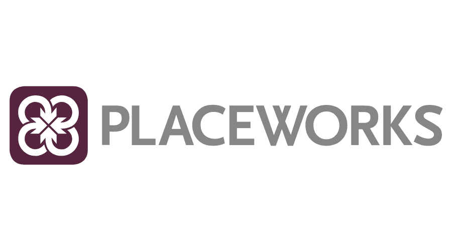
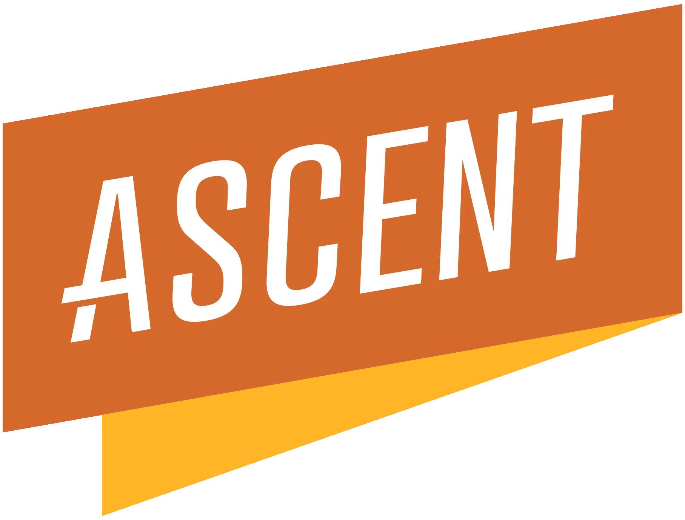
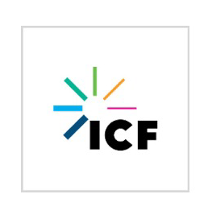
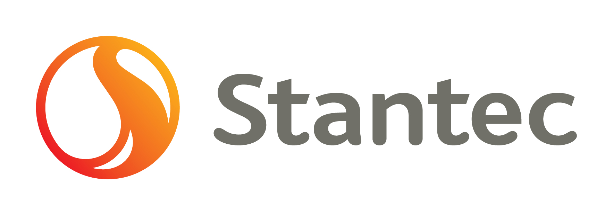
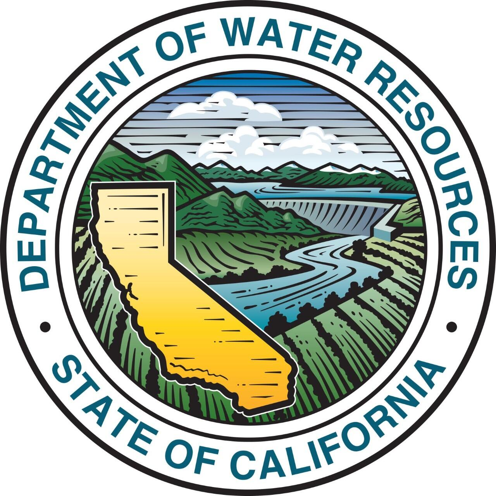
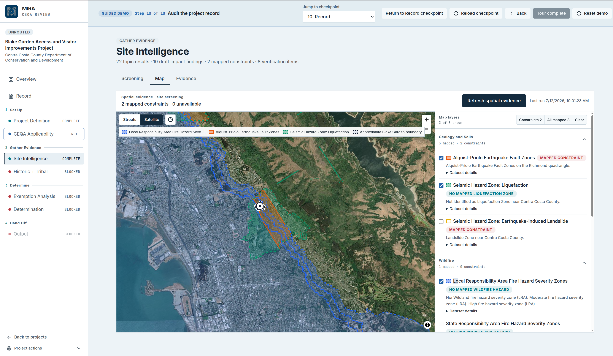

Environmental teams building on Envisor





AI-NATIVE ENVIRONMENTAL REVIEW · CEQA & NEPA
Every project built in the United States passes through environmental review. It's the invisible system shaping the physical world around us, and Envisor brings it into the modern era.
The Mapping Intake & Review Assistant. Give it a project description and an APN, and MIRA identifies concerns, likely petitioners, and mitigation strategies, then carries the project through to a review-ready Initial Study.
Book Demo




Run every project on one platform: research, evidence, drafting, and comment response in a single connected record.
Explore for Consultants
Move projects through review with a defensible, traceable record, from applicability to determination.
Explore for Agencies
Move faster through complex environmental review without losing the context, traceability, or defensibility the work demands.
Shared intelligence layer. Every module connects to the same project facts, citations, evidence, and administrative record.
Mapping Intake & Review Assistant. From a project description and APN to concerns, petitioners, and mitigation strategies.
CEQA Automated Response Assistant. Bracket, group, assign, and draft defensible responses tied to the record.
Leverage public and private data to generate review-ready environmental reports.
Explore statutes, thresholds, and precedent through semantic search of the CEQA database.
Transform complex environmental documents into ADA-compliant, accessible formats.
A project description and APN are all MIRA needs to identify concerns, likely petitioners, and mitigation strategies.
Leverage public and private data to generate review-ready environmental reports.
Bracket, group, assign responsible parties and timelines, and generate responses with CARA.
Arm approving agencies with the administrative record and monitor mitigation measures over time.
“I actually think the CARA responses are better than what a respected firm prepared.”
Principal Planner, Stantec
“This technology can easily reduce the time responding to comments by 70%.”
Principal Planner, EPD Solutions
“Firms without these tools will be uncompetitive within 10 years.”
Brian Harrington, UCOP Planning